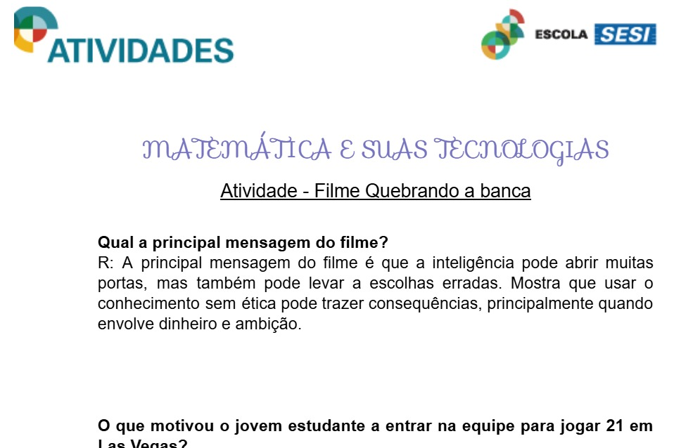

Nesta aula, assistimos ao filme Quebrando a Banca para introduzir conceitos de probabilidade de forma prática. Através da história, exploramos como o pensamento probabilístico e modelos matemáticos são usados para prever resultados em situações reais e jogos. Finalizei com uma atividade sobre o filme, exercitando a habilidade de identificar fenômenos aleatórios e quantificar riscos em cenários do cotidiano.
C5 - Aplicar o pensamento probabilístico para quantificar e fazer previsões em situações aplicadas a diferentes áreas do conhecimento e da vida cotidiana.
H30 - Identificar dados, regularidades e relações numa situação que envolva o raciocínio combinatório, utilizando os processos de contagem.
H31 - Reconhecer fenômenos e eventos (naturais, científicos, tecnológicos e/ou sociais) de caráter aleatório, compreendendo o significado e a importância da probabilidade como meio de prever resultados.
Participei da criação de um RPG para aplicar conceitos de probabilidade e raciocínio combinatório de forma prática. Durante a atividade, busquei usar os cálculos para definir as chances dos eventos no jogo, mas tive dificuldade em organizar as fórmulas e executar a dinâmica corretamente. Reconheço que a complexidade de transformar a teoria em mecânicas de RPG limitou meu desempenho final. Essa experiência mostrou que preciso dominar melhor os processos de contagem para aplicá-los com precisão em projetos criativos.
Link do jogo: https://game-nauy.onrender.com/
C5: Aplicar o pensamento probabilístico para quantificar e fazer previsões em situações aplicadas a diferentes áreas do conhecimento e da vida cotidiana.
H30: Identificar dados, regularidades e relações numa situação que envolva o raciocínio combinatório, utilizando os processos de contagem.
H31: Reconhecer fenômenos e eventos (naturais, científicos, tecnológicos e/ou sociais) de caráter aleatório, compreendendo o significado e a importância da probabilidade como meio de prever resultados.